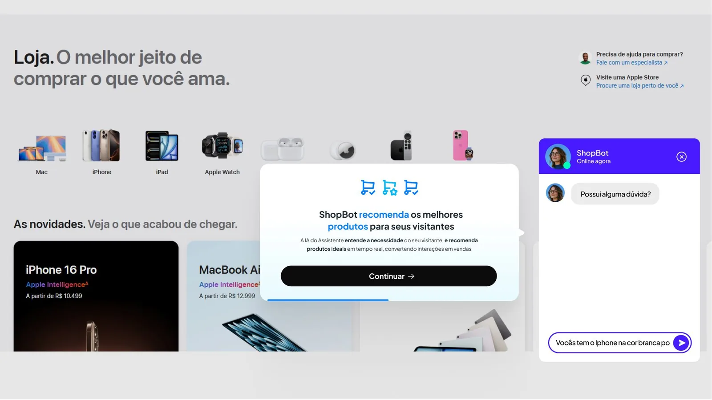
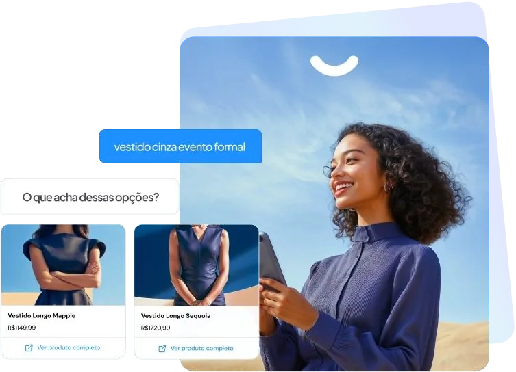

Shopbot — Agente de IA para lojas virtuais
Inteligência Artificial respondendo e recomendando produtos.


Veja uma demo do ShopBot
Endereço da demonstração a confirmar pelo titular (B3).01 / Problema
A Leadster precisava expandir e gerar novas receitas
No ano de 2023, a Leadster tinha a necessidade de expandir a receita do negócio, buscando evitar uma nova rodada de investimentos e controlar o churn.
O mercado começava a se aquecer com a Inteligência Artificial Generativa, uma onda que não poderíamos deixar passar e que não tinha aderência com o produto atual de websites já existente.
Sendo assim, era extremamente importante encontrar uma nova adição de receita à empresa.
02 / Meu papel
Da descoberta à entrega final
Como Product Designer, atuei diretamente na identificação de oportunidades do mercado e das expectativas de negócio. A partir da descoberta do problema, exploramos em conversas com clientes, não clientes, leads e pessoas com o perfil de ICP. Levantei os insights, compartilhei com as lideranças e priorizamos o desenvolvimento de uma solução com IA. Sendo o boom da IA Generativa e o insight principal de que a assertividade de uma resposta e recomendação eram dores impactantes às lojas virtuais.
A partir da hipótese priorizada, foram desenvolvidos testes para saber qual segmento atacaríamos. Via Figma, identificamos que o segmento B2C tinha mais aderência ao modelo que idealizávamos.
Segui com a construção de fluxos, jornadas de uso e ativação e telas. Realizei diretamente testes de usabilidade com clientes e stakeholders, coletei os feedbacks e evoluímos as telas.
Em paralelo, eram feitos testes de precificação e de interesse do mercado. Acompanhei, junto com o time de desenvolvimento, a evolução da estrutura do Agente de IA, como ele iria funcionar, os prompts criados e os testes internos.
A partir da validação, foi desenvolvido o cards de desenvolvimento; gerenciei diretamente o backlog de atividades, priorizando o que devia ser entregue para o MVP.
Com o lançamento, metrifiquei o uso, monitorei ações e propus melhorias para ajustar o essencial.
03 / Processo
O processo de expansão
Descoberta
Necessidade de negócio de expandir; seguir a tendência de uso de IA Generativa. Oportunidade de entrar em um novo segmento emergente. Clientes com potencial de ticket médio maior. Crescimento tecnológico e de estrutura.
Através de conversas e alinhamentos, foi priorizado buscar um novo segmento de atuação que necessitava de atuação de IA Generativa.
Definição
Através de conversas e alinhamentos, foi priorizado buscar um novo segmento de atuação que necessitava de IA Generativa e desenvolver um novo produto, com base na estrutura do atual. Ter área de edição de Agente e fluxos.
Design
Gerar jornadas de uso, JTBD, wireframes e protótipos navegáveis com Figma. Validação entre times, testes com usuários, backlog e hand-off.
Validação
Testes com usuários, testes internos e em QA. Gerenciamento de backlog, acompanhamento de métricas e vendas.
04 / O que aprendemos
Decisões-chave e outcomes
Decisões
- Entrar no segmento de e-commerce e priorizar clientes do modelo B2C.
- IA Generativa que responde e recomenda produtos.
- Nova precificação e novos planos focados no ShopBot.
- Definir o nome ShopBot.
- Usar a mesma estrutura do produto atual da Leadster.
- Nova jornada de onboarding e criação de anúncios e landing page específica.
Outcomes
- Criar integrações com as principais plataformas de e-commerce: Tray, Vtex, Shopify, entre outras.
- Criar demonstrações e casos de uso.
- Aumentar o limite de caracteres para a base de conhecimento.
- Desenvolver um resync automático de leitura e cadastro de produtos na base de conhecimento.
- Ajustar a precificação.
05 / Resultados
Navegação fluída, aumento na levantada de mão
- Adição em R$ 30 mil de MRR em apenas 6 meses.
- Menor taxa de churn entre os três produtos da Leadster.
- Média de 23x o retorno sobre o investimento.
- 90% das perguntas são respondidas pela IA.
- 30% das conversões em vendas.
- O principal produto para e-commerce utilizado pelas plataformas brasileiras: Tray, Vtex e Loja Integrada.